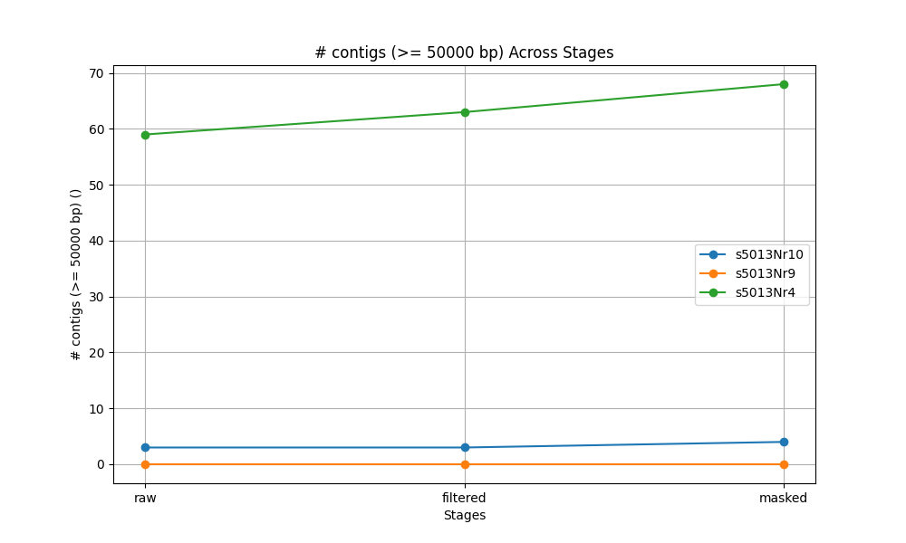

Project Introduction
I thought I knew bioinformatics, but then I discovered genomics while writing this thesis with Professor Mackiewicz. This experience was a deep dive into genomic data and technical processes, bringing me invaluable insights.
Diagnostics Bioinformatician
I thought I knew bioinformatics, but then I discovered genomics while writing this thesis with Professor Mackiewicz. This experience was a deep dive into genomic data and technical processes, bringing me invaluable insights.
The setup and workflow were essential to assembling mitochondrial genomes.
I successfully assembled mitochondrial genomes for several samples (e.g., Figure 2 for sample 4), which also show comparability across samples.
Comparative data across samples (Figure 3) further validate assembly quality and consistency.
While mitochondrial genome assembly succeeded, nuclear genome assembly was challenging due to insufficient short-read data.
This was my bachelor thesis, and I had limited influence on data types used. Despite long-read options, I worked with short-read data, which limited nuclear genome assembly success.
However, I had significant independence within these constraints, gaining practical skills in genomic assembly processes.